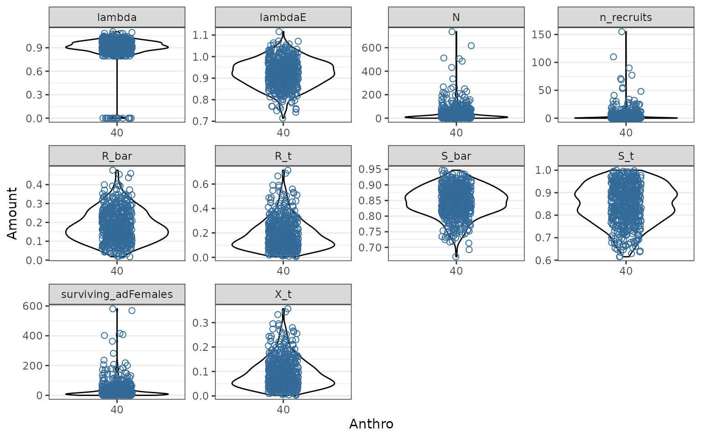

Disturbance Metrics and Caribou Demography
caribouDemography.RmdIntroduction
This vignette gives details on the use of the disturbanceMetrics, demographicCoefficients, demographicRates, and popGrowthJohnson functions. Together, these functions represent an implementation of the aspatial caribou demographic model developed by Johnson et al. (2020), and modified by Dyson et al. (in prep) and Stewart et al. (in prep).
Disturbance metrics
The example data set loaded below includes a small area in the Nipigon caribou range that we will use as an example.
# load example data and classify plc into Resource Types
landCoverD = raster(file.path(pthBase, "landCover.tif")) %>%
reclassPLC()
natDistD = raster(file.path(pthBase, "natDist.tif"))
anthroDistD = raster(file.path(pthBase, "anthroDist.tif"))
linFeatDras = raster(file.path(pthBase, "linFeatTif.tif"))
projectPolyD = st_read(file.path(pthBase, "projectPoly.shp"), quiet = TRUE)
linFeatDshp = st_read(file.path(pthBase, "linFeat.shp"), quiet = TRUE)
roadsD = st_read(file.path(pthBase, "roads.shp"), quiet = TRUE)
railD = st_read(file.path(pthBase, "rail.shp"), quiet = TRUE)
utilitiesD = st_read(file.path(pthBase, "utilities.shp"), quiet = TRUE)disturbanceMetrics will prepare the data and then calculate disturbance metrics used as predictor variables by Johnson et al. (2020). The function can be run in several different ways, and the simplest is to provide spatial objects for each input.
disturbance <- disturbanceMetrics(
landCover=!is.na(landCoverD),
natDist = natDistD,
anthroDist = anthroDistD,
linFeat = linFeatDras,
projectPoly = projectPolyD
)
plot(disturbance@processedData) Multiple linear feature inputs can also be provided in vector form. See vignette("caribouHabitat", package = "caribouMetrics") for other data processing and input options.
disturbanceV <- disturbanceMetrics(
landCover=!is.na(landCoverD),
natDist = natDistD,
anthroDist = anthroDistD,
linFeat = list(roads = roadsD, rail = railD, utilities = utilitiesD),
projectPoly = projectPolyD
)
plot(disturbanceV@processedData)Simple demographic projection for a single example landscape
A simple case for demographic projection is multiple stochastic projections from a single landscape that does not change over time. We begin by sampling coefficients for 500 replicate populations using default models M1 and M4. Next we calculate sample demographic rates given sampled model coefficients and disturbance metrics for our example landscape, setting returnSample = TRUE so that the results returned contain a row for each sample in each scenario. We set the initial population size for each sample population to 100, and project population dynamics for 20 years using the popGrowthJohnson function with default parameter values. Anthropogenic disturbance is high on this example landscape, so the projected population growth rate for most sample populations is below 1, but uncertainty in the model means that a few sample populations persist.
popGrowthPars <- demographicCoefficients(500)
rateSamples <- demographicRates(
covTable = disturbanceV@disturbanceMetrics,
popGrowthPars = popGrowthPars,
ignorePrecision = FALSE,
returnSample = TRUE,
useQuantiles = FALSE)
rateSamples$N0 <- 100
demography <- cbind(rateSamples,
popGrowthJohnson(N = rateSamples$N0,
numSteps = 20,
R_bar = rateSamples$R_bar,
S_bar = rateSamples$S_bar))
fds <- pivot_longer(demography, !(scnID:replicate) & !N0, names_to = "Metric",
values_to = "Amount")
d1 <- ggplot(fds, aes(x = as.factor(round(Anthro, 2)), y = Amount,
colour = fire_excl_anthro)) +
geom_violin(alpha = 0.4, color = "black") +
geom_point(shape = 21, size = 2, position = position_jitterdodge()) +
facet_wrap(~Metric, scales = "free") +
theme(legend.position = "none") +
xlab("Anthro")
plot(d1)
Effects of disturbance on demographic rates
We can project demographic rates over a range of landscape conditions to recreate figures 3 and 5 from Johnson et al. (2020) and see the effects of changing disturbance on model behaviour. First we create a table of disturbance scenarios across a range of different levels of fire and anthropogenic disturbance.
covTableSim <- expand.grid(Anthro = seq(0, 90, by = 2),
fire_excl_anthro = seq(0, 70, by = 10))
covTableSim$Total_dist = covTableSim$Anthro + covTableSim$fire_excl_anthroWe again sample coefficients from default models M1 and M4. The sample of 500 is used to calculate averages, while the sample of 35 is used to show variability among populations.
popGrowthPars <- demographicCoefficients(
500,
modelVersion = "Johnson",
survivalModelNumber = "M1",
recruitmentModelNumber = "M4",
populationGrowthTable = popGrowthTableJohnsonECCC
)
popGrowthParsSmall <- demographicCoefficients(
35,
modelVersion = "Johnson",
survivalModelNumber = "M1",
recruitmentModelNumber = "M4",
populationGrowthTable = popGrowthTableJohnsonECCC
)Next we calculate demographic rates given sampled model coefficients. For the smaller sample we set returnSample = TRUE so that the results returned contain a row for each sample in each scenario. Setting useQuantiles = TRUE assigns each sample population to a quantile of the regression model error distributions for survival and recruitment, which allows us to see how demographic rates change. For the larger sample we set returnSample = FALSE and the result has one row for each scenario and includes summary statistics of the uncertainty across the samples. We do this twice, once with ignorePrecision = TRUE and once with ignorePrecision = FALSE to demonstrate the effect of considering the variance among populations around the National mean in addition to the uncertainty about the coefficient estimates.
rateSamples <- demographicRates(
covTable = covTableSim,
popGrowthPars = popGrowthParsSmall,
ignorePrecision = FALSE,
returnSample = TRUE,
useQuantiles = TRUE
)
rateSummaries <- demographicRates(
covTable = covTableSim,
popGrowthPars = popGrowthPars,
ignorePrecision = FALSE,
returnSample = FALSE,
useQuantiles = FALSE
)
rateSummariesIgnorePrecision <- demographicRates(
covTable = covTableSim,
popGrowthPars = popGrowthPars,
ignorePrecision = TRUE,
returnSample = FALSE,
useQuantiles = FALSE
)No precision
The Johnson et al. (2020) model with parameter uncertainty but no precision. The bands are the 2.5% and 97.5% quantiles of 500 sample parameter values. 

With precision
The Johnson et al. (2020) model with parameter uncertainty and precision. Faint coloured lines show example trajectories of expected demographic rates in sample populations, assuming each sample population is randomly distributed among quantiles of the beta distribution, and each population remains in the same quantile of the beta distribution as disturbance changes. 
#> Warning: Removed 2 row(s) containing missing values (geom_path).Projection of population growth over time on a changing landscape
In this example, we project 35 sample populations for 50 years on a landscape where the anthropogenic disturbance footprint is increasing by 5% per decade. We set interannualVar = FALSE, K = FALSE, and probOption = "continuous" to use a simpler 2-stage demographic model without interannual variability, density dependence, or discrete numbers of animals, as in Stewart et al. in prep.
numTimesteps <- 5
stepLength <- 10
N0 <- 100
AnthroChange <- 5 #For illustration assume 5% increase in anthropogenic disturbance footprint each decade
# at each time, sample demographic rates and project, save results
pars <- data.frame(N0 = N0)
for (t in 1:numTimesteps) {
covariates <- disturbanceV@disturbanceMetrics
covariates$Anthro <- covariates$Anthro + AnthroChange * (t - 1)
rateSamples <- demographicRates(
covTable = covariates,
popGrowthPars = popGrowthParsSmall,
ignorePrecision = FALSE,
returnSample = TRUE,
useQuantiles = TRUE
)
if (is.element("N", names(pars))) {
pars <- subset(pars, select = c(replicate, N))
names(pars)[names(pars) == "N"] <- "N0"
}
pars <- merge(pars, rateSamples)
pars <- cbind(pars,
popGrowthJohnson(pars$N0,
R_bar = pars$R_bar, S_bar = pars$S_bar,
numSteps = stepLength, interannualVar = FALSE,
K = FALSE, probOption = "continuous"))
# add results to output set
fds <- subset(pars, select = c(replicate, Anthro, S_bar, R_bar, N, lambda))
fds$replicate <- as.numeric(gsub("V", "", fds$replicate))
names(fds) <- c("Replicate", "anthro", "survival", "recruitment", "N", "lambda")
fds <- pivot_longer(fds, !Replicate, names_to = "MetricTypeID", values_to = "Amount")
fds$Timestep <- t * stepLength
if (t == 1) {
popMetrics <- fds
} else {
popMetrics <- rbind(popMetrics, fds)
}
}
popMetrics$MetricTypeID <- as.character(popMetrics$MetricTypeID)
popMetrics$Replicate <- paste0("x", popMetrics$Replicate)
popMetrics <- subset(popMetrics, !MetricTypeID == "N")